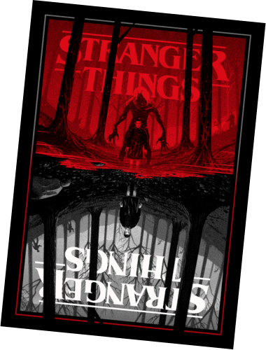

O Mundo Invertido
O Mundo Invertido parece uma cópia do nosso mundo, mas com criaturas horrendas, tempestades assustadoras, muita escuridão e entidades malignas. Um reino controlado por Vecna, que tem planos de trazer tudo isso ao nosso mundo.

Stranger Things Vol. 4
Mais experientes, os heróis de Stranger Things também precisam enfrentar desafios maiores do que nunca e fazer decisões que vão mudar suas vidas para sempre. Confira ao lado o trailer da quarta temporada.
A segunda série mais assistida da Netflix


O Clube Dungeons & Dragons
Para deter Vecna, os heróis de Stranger Things também precisam de você. O Clube de D&D mais famoso de Hawkings está com vagas abertas para sua próxima aventura. Se você é destemido, gosta de desafios e não tem medo de rodar o D20, chegou a hora de se inscrever para fazer parte da nova campanha.